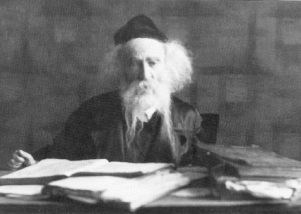

In the Presence of the Rogatchover Gaon
In the monthly publication called “Turei Yeshurun,” in 5735, there was an article written by the journalist Noach Zevuloni who spent a year with the Rogatchover Gaon, Rabbi Yosef Rosen. * Presented for the gaon’s yahrtzait on 11 Adar 5696/1936.

I was in the presence of the Rogatchover Gaon, author of Tzafnas Paneiach on the Rambam’s Yad and tractates of Shas, for an entire year. This was 1932-1933 in Dvinsk, Latvia. I studied in the yeshiva that had been founded in that city.
I entered Latvia from Poland illegally, and thanks to the Agudas Israel representative to the Latvian parliament, R’ Mordechai Dubin (who perished in prison in the Soviet Union during World War II), I was given permission to remain in Latvia.
The rav of Dvinsk, Rabbi Yosef Rosen, who is known as the Rogatchover in the Torah world, never led a yeshiva or gave smicha. He would stand on his feet day and night with an open Gemara in front of him on a small lectern and learn Torah or respond to halachic queries that came to him from all over the world.
The Rogatchover would answer briefly on a postcard. He did not check out the questioner and most of the thousands of inquiries were made by people he did not know.
Aside from his greatness in Torah, Halacha, Agada, poskim, etc., there was another reason people turned to him. Since people heard that he responded to everyone, all kinds of people wrote to him, some wanting his autograph for an album. They often asked him foolish questions, and he, in his wisdom, answered them. Some people received answers full of citations of where to look and when they looked up the sources they saw that all of them dealt with an ignoramus. His wife, who was learned and knew several languages, was the one who addressed the postcards.
STAMPS AND POSTCARDS
The Rogatchover’s material circumstances were poor. The Jewish community in Dvinsk was impoverished and did not receive government assistance. For this reason, he thought twice about every letter he responded to. Those who included a stamp solved the financial problem, but most correspondents did not know of his impecunious state. He would calculate and affix a stamp that was half of what the postcard required, and the recipient, by law, had to pay the rest.
His Tzafnas Paneiach, despite meaning unlocking that which is hidden, is still rather obscure till this day, even to great scholars. It was written with great brevity and with subtle references. It is full of ayeinim – look here, look there, with sources cited without explanation.
In recent years, R’ Menachem Kasher and R’ Moshe Grossberg of Yerushalayim have been working to explain his teachings. However, one who was in his presence knows how to differentiate between the Rogatchover’s written Torah and his oral Torah. The Rogatchover had an outstanding ability to explain things. He explained everything in a logical and simple manner. Most of his chiddushim that were publicized, and even those that have not yet been published, were taken from notes that he wrote as he learned in the margins of his old Gemara.
If one visited his humble abode one saw that he did not possess a large library as other rabbanim did. He managed with a small shelf that contained a Shas, a Rambam (whom he referred to as “my Rebbi”), Turim, and some Rishonim. Opposite the shelf with s’farim was a large pile of s’farim that he did not use and did not even look at. These were Acharonim and other s’farim that were sent to him to be critiqued.
His clever sayings were oft repeated by the masses, especially in the world of the yeshivos. His sharp remarks about many of the G’dolei HaTorah of his generation and even of previous generations did not generally arouse animosity.
The Rogatchover, who lived a life of material deprivation, was very particular about not making long-distance calls from his home. In Dvinsk there was a monthly charge for phone usage which was unlimited except for long-distance calls, each of which was marked down and required payment.
I once was witness to the following. The gabbai of the Planover shul where the Rogatchover davened, Mr. Vafsi (the father of Dr. Vafsi, one of the doctors accused in Stalin’s Doctors’ Plot), came into the house and asked to use the phone. Permission was granted, but the Rogatchover motioned to me to come over and he said to me, “Koidonover (which is what he called me after the city I came from), please see to it that Vafsi does not call Riga.”
DIN TORAH
R’ Yosef Rosen’s conversations were those of a real talmid chacham. His mundane talk was a mix of Divrei Halacha and Agada, and this was true all his life. He told me about a famous Din Torah that dragged on for a long time about an astronomic sum of money, which ended with a compromise between the two sides. The beis din was comprised of three g’dolim including the Rogatchover, the rav of Shavli R’ Meir Atlas, and the famous R’ Chaim Brisker (Soloveitchik) or R’ Chaim Ozer Grodzenski of Vilna (it is not clear which one since the Rogatchover said he sat with Chaim and Meir at the Din Torah. He would call g’dolim, even those of previous generations, by their first names).
After the two sides agreed to compromise, they took out money with which to pay the members of the Beis Din, but R’ Meir and R’ Chaim refused to accept it. The Rogatchover, on the other hand, took the money and he demonstrated for me how he swept the money off the table and put it in his pocket saying: There is an explicit Gemara to take it as it says, “A deaf-mute, a mental deficient and a minor etc.” Regarding the mentally deficient it says in Chagiga Daf 4, “Who is a shoteh? One who destroys what he is given.” The question is asked, we would expect it to say that he destroys that which he has, not that which he is given. From here we see that if one is given and he refuses to take, he is called a shoteh and I don’t want to be included in that category.
THE LETTER AND THE SIGNATURE
The Rogatchover feared no one, not even his supporters. With my own eyes I saw the head of the k’hilla bring him a letter about an important communal matter that needed the Rogatchover’s signature. The Rogatchover took the pen and the stamp and stamped in the middle of the letter saying: Up till here I am an agreement with what it says in the letter and I’ve signed. From this point and on, I disagree and I won’t sign. The head of the k’hilla’s importuning him was to no avail.
There has yet to be a biography about the Rogatchover that conveys his greatness in Torah and in all areas of wisdom and Jewish thought. Nothing was concealed from him. His mouth uttered pearls and he had complete mastery of Talmud Bavli, Yerushalmi, Rambam, etc., word by word and letter by letter.
It once happened that while talking in learning he momentarily forgot what Rashi says in a certain place. He immediately stamped his foot and said: “One who forgets something from his learning is considered as liable for his life (Avos 3:10).” But then he immediately remembered it and went on to quote the Rashi.
Even in other matters, his whole world was one of Torah. In Dvinsk it was customary to collect money twice a year for the poor of the city – before Pesach for the holiday, and at the beginning of the winter for firewood. The Jewish community asked the Rogatchover to announce to the public at large to donate at the bi-annual appeal so that the poor would be able to withstand the bitter cold. The Rogatchover agreed and publicized an announcement asking people to contribute. The announcement was pithy and replete with Torah sources about the danger of cold weather.
MEDICAL KNOWLEDGE
The Rogatchover was very knowledgeable in medical matters from his expertise in Talmud where all sorts of illnesses and cures are mentioned. For example, when he needed an urgent operation, after his personal doctor, the famous surgeon Professor Mintz of Riga, examined him and diagnosed the illness, R’ Rosen tried to argue with him by quoting a Yerushalmi about the course of the illness. He said that according to the Yerushalmi the surgery needed to be done elsewhere and not where the professor said it should be done. Prof. Mintz, who remembered the learning of his youth, got up and said: Obviously I won’t argue with the Yerushalmi. I suggest that the Yerushalmi operate on the rav, and not I.
Rabbanim and talmidim of yeshivos abroad who visited Dvinsk would come to the home of the Rogatchover. Some were afraid to go in and asked to be escorted and introduced.
One Shabbos, I accompanied R’ Gronem Landau, one of the outstanding students of Kamenitz in Lithuania who is today the head of Yeshivas HaDarom in Rechovos. I introduced him to the Rogatchover, and after a polite exchange I left for yeshiva as R’ Landau remained behind.
On Motzaei Shabbos I met R’ Landau who said that the Rogatchover was looking for me. I was a bit nervous because the Rogatchover was suspicious of people illicitly taking s’farim from him (he didn’t have anything else …) and I went to him right away.
When he saw me, he took off his warm coat and put it on my shoulders and said, “Koidonover, the winter is in full force and you go about without a coat. Take my coat. I don’t have money to buy you a new coat but if there is no choice, this will do fine.”
I could not refuse, because one may not refuse a great man and I had to take it. Till today, I still have it as a keepsake.
TZADDIK AND CHASSID
R’ Shila Refael, rav of Kiryat Moshe in Yerushalayim and the grandson of R’ Yehuda Leib Fishman (Maimon), told me an interesting story which shows the Rogatchover’s greatness and his quick grasp. It was when the Turks ruled Palestine, when every Jew who was not born in Eretz Yisroel expected to be expelled. Many of those who were born abroad swore they were born in Eretz Yisroel and that satisfied the Turks.
The rabbanim in Eretz Yisroel discussed whether it was halachically permitted to make this false oath. R’ Fishman and R’ Abba Citron, rav of Petach Tikva, who was the Rogatchover’s son-in-law, asked the rav of Dvinsk, R’ Rosen. The answer he wrote them said merely: It is surely permissible, see K’subos daf 75.
On that page it says on the verse (T’hillim 87), “And of Zion it shall be said, this man and that man was born in her, for the Most High Himself will establish her,” that Rav Maisha, the son of the son of Rebbi Yehoshua ben Levi said, “one who is born in it and one who anticipates seeing it.” Rashi there says, “One who anticipates seeing it is called one of its children.”
In addition to his greatness in Torah, the Rogatchover was a tzaddik and Chassid. There were things he was exceedingly particular about. He did not look at women, even unmarried women. When he walked to shul he walked in the gutter and not on the sidewalk, lest he encounter a woman and be forced to look at her.
He did not discuss with youngsters those Halachos which pertain to man and wife. If a youngster went to him and wanted to talk about these topics, the Rogatchover would immediately ask him whether he was married or not.
These are just a few glimpses into the life of a great man of Israel, a man of luminous countenance whose face shone like that of a heavenly angel.
Beis Moshiach (staff). "In the Presence of the Rogatchover Gaon." Beis Moshiach, no. 870 (February 21, 2013).